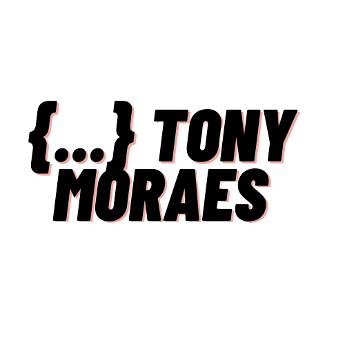

Overview
Purpose
The purpose of this portfolio website is to provide a comprehensive overview of my professional experience, personal projects, and technical expertise. It serves as a platform to showcase my skills, highlight key accomplishments, and offer insight into my journey as a software engineer. This site will also act as a central hub for potential employers, collaborators, and clients to connect with me, explore my work, and learn more about my passion for software development.
Audience
My portfolio website targets employers and recruiters seeking software engineers for international or remote roles. The audience includes collaborators, peers, and tech enthusiasts in their 20s to 40s, interested in open-source projects and software development. Clients and freelancers, often small business owners or startup founders, also seek technical expertise to address business challenges.
groups need a developer with strong technical skills who can work effectively in remote settings. They often struggle to find someone who can deliver solutions and integrate into distributed teams. Most will access the site via desktops, laptops, and mobile devices, so responsive design is key for a smooth experience.
Branding
Website Logo
Style Guide
Color Palette
Palette URL:
https://coolors.co/palette/0d1b2a-1b263b-415a77-778da9-e0e1dd| Primary | Secondary | Accent 1 | Accent 2 |
|---|---|---|---|
| #3E5C76 | #75DDDD | #84C7D0 | #F45B69 |
Typography
Heading Font: Roboto Slab
Paragraph Font: Roboto Slab
Normal paragraph example
The best Whitewater Rafting in Colorado, White Water Rafting Company offers rafting on the Colorado and Roaring Fork Rivers in Glenwood Springs. Since 1974, we have been family owned and operated, rafting the Shoshone section of Glenwood Canyon and beyond.
Colored paragraph example
Trips vary from mild and great for families, to trips exclusively for physically fit and experienced rafters. No matter what type of river adventures you are seeking, White Water Rafting Company can make it happen for you.
Navigation
Site Map
Wireframes
Home

Work
About Me
Writings
Content of The Page - Draft
Welcome to My Professional Portfolio
Welcome to my portfolio website, your gateway to exploring my journey, skills, and expertise as a software engineer. Whether you're an employer seeking a reliable developer, a collaborator interested in innovative projects, or a client looking for tailored solutions, this site is designed with you in mind. My goal is to provide a seamless and informative experience where you can learn about my professional background, delve into my technical skills, and understand the passion that drives my work.
Why Visit This Site?
This portfolio exists to address your most pressing questions and needs when seeking a capable software engineer. You’ll find detailed information about my experience, specific skills in programming languages, frameworks, and tools, as well as an overview of projects I’ve led or contributed to. Visitors to this site often seek a developer with a proven track record of delivering results, adapting to complex environments, and thriving in international or remote settings. My portfolio ensures you have all the information you need to evaluate how I can meet your unique needs.
Here are some key reasons people visit my site:
- Employers and recruiters: Seeking a skilled software engineer for international or remote roles.
- Collaborators and peers: Looking for expertise in specific technologies or seeking partnerships in open-source or innovative projects.
- Clients and freelancers: Exploring technical solutions for business challenges, particularly in startups or small business settings.
What You’ll Find on This Site
To create an engaging and user-friendly experience, my portfolio is organized into the following pages:
- Home Page: The gateway to my portfolio, where visitors can quickly browse through a curated list of my projects. Each project will include a brief description, its purpose, and a link to explore further details. This page is designed to make a strong first impression and showcase the breadth and depth of my work.
- About Me: A dedicated page offering insights into my professional background and journey as a software engineer. This section focuses on my skills, values, and what drives me in my work, without diving too deeply into personal life details. Testimonials from colleagues, collaborators, or clients will be included here to provide additional context about my character and work ethic.
- Work Experience: A detailed page outlining my professional history, highlighting key roles, accomplishments, and the impact I’ve made in previous positions. This section will also feature testimonials, emphasizing how my work has benefited teams, projects, or companies.
- Blog: A dynamic space for my writing, where I share posts on software development, industry trends, and lessons learned throughout my career. This section is aimed at tech enthusiasts, peers, and anyone interested in gaining insight into the field of software engineering.
Activities and Expectations
Visitors to my site will likely engage in the following activities:
- Evaluating my qualifications: Employers and recruiters will review my skills, project history, and experience to assess my suitability for their roles.
- Exploring my portfolio: Collaborators and clients will seek examples of completed projects to gauge my expertise and fit for their needs.
- Connecting with me: Visitors may use the contact form to inquire about opportunities, propose collaborations, or request consulting services.
- Reading blog posts: Tech enthusiasts will engage with educational content or industry insights shared on my blog.
To support these activities, the site provides well-organized and easily navigable content, detailed project descriptions, and contact options.
Why Choose This Site?
There are many portfolio websites, but this one stands out because of its focus on:
- Relevance: The content is tailored to the specific needs of the audience—whether you're an employer, collaborator, or client. You’ll find the precise information you’re looking for without sifting through irrelevant details.
- Clarity and Transparency: I emphasize clarity in presenting my skills and projects. You’ll understand not just what I’ve done, but how I did it and why it matters.
- International and Remote Focus: My experience working in distributed teams ensures I can seamlessly integrate into global settings. This sets me apart for employers and collaborators prioritizing remote work.
- Professionalism: Every aspect of the site reflects the dedication I bring to my work, from the design and navigation to the depth of information provided.
Final Thoughts
My portfolio website is more than just a collection of skills and projects—it’s a representation of my dedication to software engineering, my passion for problem-solving, and my commitment to delivering value. Whether you're here to evaluate my expertise, learn from my experiences, or connect for collaboration, I hope you leave with a clear understanding of my capabilities and enthusiasm for what we could achieve together.
Feel free to explore the site and reach out if you have any questions or opportunities in mind. Let’s create something incredible!
images
architecture.webp
blur-skills.jpg
city-language-2.webp
city-language.webp
database-tools.webp

kotlin-fullcolor-black.png

kotlin-fullcolor-white.png
lamp-and-books.webp
new-php-logo.svg
screen-behind-glass.jpg
studing-library.jpg
studing.jpg
tools.webp